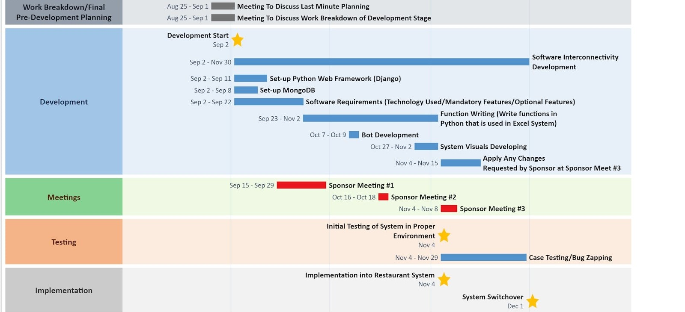

Introduction to The Project
Texas Jacks Barbeque is a BBQ Joint located in Annandale and has been one of my favorite spots for some time so it was a very rewarding experience for me to help them
on the technical side of things.
The goal for me and my team was to create a Tip-Out web applications for Texas Jacks Barbeque. With our point of contact having so many requirements for the
web application on top of 2020 being one of the craziest years, front to back, this project took place over the course of one year (1/2020 - 12/2020). To give a high
level overview of the issue we were tasked to solve: create a Web Application to replace the current tip out system and integrate their POS (point of sale) into
the system for automation.

As you may notice there is mention of using a Django framework in the listed timeline. I created an entirely seperate post with a more detailed responce to this here
Current Business Problems & Proposed Solutions
The manager at that time created an extensive excel sheet in liue of not having a script or program to sync up with the POS and automate the tip out for each
employee at the end of their shift. Relevant information about an individuals tips throughout their shift was printed and pulled as a CSV file, from aloha, which was
then manually input into the excel sheet. A big time sink for any manager to be handeling especially considering they are a busy resturant. Our proposed solutions
-
Our Proposed Solutions
-
Web hosting for web application, tip out system
-
Web application created by using NodeJS framework
-
Bot to extract Aloha data for web application
-
MongoDB database to store data
-
Unexpected Roadblocks
-
Aloha had a stricter firewall and specalized security therefore
the bot we created to extract the data had to be
tested on a native device.
-
Switching frameworks from Django to NodeJS
-
2020 limiting the production of this project